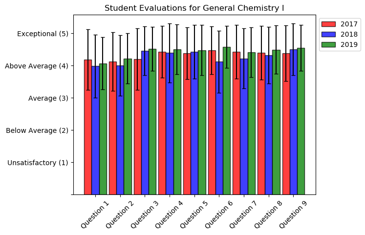

Teaching Bio
New York University
My first formal teaching assignment was in New York University during the Spring 2017 semester as teaching assistant for a general chemistry course for non-science majors (Chemistry and the Environment) and for a physical chemistry course.
My predominant responsibilities in both cases were leading lab sections of 5-10 students and grading lab reports.
The labs themselves were for the most part written and set up by the course instructors.
The grading rubrics and answer keys were also provided for me by these course instructors.
Teaching students without a specific interest in science was an enlightening experience.
I saw firsthand how science content can effectively be conveyed to appeal to a generalized audience while still addressing important fundamental aspects of chemistry, such as balancing chemical equations, calculating reaction enthalpies, and even some rudimentary spectroscopy.
My experience teaching the physical chemistry lab was particularly rewarding, as this course shaped my interest for pursuing graduate school.
In particular, the mentorship from the course instructor helped mold my perspective toward generating rubrics for fair grading systems.
Syracuse University
The Fall 2017 semester was my first semester teaching at Syracuse University.
Here I taught a number of recitation sections in general chemistry, ranging from 15 to 30 students.
I also held office hours, proctored, and graded exams.
As part of recitation, I worked through worksheets provided by the course instructor.
I always made a separate key to allow the students to see my own notes as I worked through problems.
In Spring 2018, I taught physical chemistry lab and lecture at Syracuse University.
This semester involved preparing labs and leading lab sections of 5-10 students, and lecture responsibilities involved proctoring and grading exams.
I also prepared PowerPoint presentations on the labs, discussing some of the background and experimentation, and presented these to the students prior to the respective labs.
There was substantially greater independence in leading these lab sections compared to the teaching experience for the same course at NYU.
However, I made use of the lessons I learned at NYU with respect to fair grading and generating grading rubrics.
In Fall 2018 I taught general chemistry again, although this time it was for a different course instructor.
The desired recitation format was different, and I adapted my teaching style accordingly.
This involved a much more open-ended recitation, where students brought homework or other general questions that came up throughout the week.
For each recitation, I always prepared 3 or 4 questions with an answer key to go over and discuss if there were no questions.
In Spring 2019, I taught the second semester of general chemistry, which involved reviewing worksheets provided by the course instructor.
In Fall 2019, I again taught the first semester of general chemistry which involved reviewing worksheets.

Question 1: The TA's accessibility during posted office hours.
Question 2 : The TA's enthusiasm for teaching.
Question 3 : The TA's willingness to help students learn the material.
Question 4 : The TA's knowledge of the course material.
Question 5 : The TA's preparation for class.
Question 6 : The TA's promptness in evaluating and returning assignments.
Question 7 : The TA's quality of instruction.
Question 8 : The TA's voice is clear and understandable.
Question 9 : The TA's level of respect and sense of fairness in dealing with students.
In general these teaching evaluations show an improvement over the course of 3 years, during which I taught General Chemistry I (Fall semester).
Although most scores lie within the above average to exceptional range, I would like to highlight the improvement in response to Question 3, which indicates the TA's willingness to help students learn the material.
Although I was always willing to help my students engage with the content, I believe by incorporating feedback from prior years, I was able to offer better instruction by teaching more slowly and working more explicitly through different examples that could have aided in student understanding.
Starting in Spring 2020, I began teaching second semester Physical Chemistry lab and lecture again, this time with a new instructor.
I adapted my teaching style to suit this new instructor, which meant less involvement in the presentations of the labs, but greater involvement in the lab preparation and grading.
During this time, campus shut down due to the COVID-19 outbreak.
I then had to adapt my labs to be fully remote friendly.
This involved writing labs that made significant use of Python, and although different from what I envisioned, I believe were still successful at bringing across the major scientific points.
I also relied on video recordings for the first time to present material to students.
In Fall 2020, I taught the first semester of physical chemistry lab and lecture for the first time.
Students returned to campus but all course content was kept hybrid.
I subsequently became very familiar with using online platforms such as Kaltura, Blackboard, and Zoom to record and post lectures.
I also adapted to holding virtual office hours over zoom, which I believe remained successful despite being different.
In Spring 2021, I taught the second semester of physical chemistry lab and lecture again.
Although this was the third time teaching this course, it was the third time teaching for a different course instructor.
Thus the content and teaching approach was adapted to best fit the style of the new instructor.
This involved greater collaboration with the instructor to deliver labs that accomplished a set number of goals, which was an insightful approach to developing laboratories that I felt was very successful and plan to continue to implement in teaching future courses.
Lastly I taught physical chemistry lab again in Fall 2021.
I was much more greatly involved in developing the lab content.
The instructor wanted a greater focus on thermochemical principles to align with the lecture content during this semester.
As such, a few labs were switched to better achieve these goals.
The lab material was redesigned to explicitly state desired teaching goals and outcomes.
I also developed an entirely new lab based on available instrumentation – namely, study of colligative properties using calorimetry.